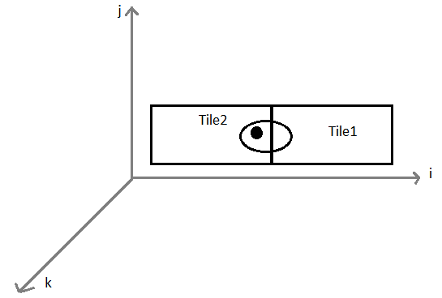

In this chapter, I will explain how to use the game editor provided by Canvace to set up a single level for an isometric game. First, you need to install Canvace and make the editor accessible to a webserver: follow THIS GUIDE.
Once the installation is complete and the editor is running, the first step is creating a new stage using Create stage. Each stage represents one level in the game. Click on the newly-created stage in the list to open the editor.
When creating a new stage, the projection matrix needs to be defined. You can either select the default one, or define a custom 3x3 matrix: note that for now the last row must always be inserted at hand, whereas the other elements are indirectly modified by Canvace when the adjacent graphical representation is changed. For isometric games, the default projection matrix transforms the 3d map coordinates of the elements (in Canvace referred to as i, j and k) into window coordinates for the canvas (x, y and z, where the depth z is used to avoid drawing objects hidden by closer ones).
When using the default projection matrix in isometric games, an issue may arise. Consider two adjacent tiles and an entity placed as in the following figure (seen from above):

The point identifies the location of the entity, but the entity frame is bigger and actually spawns across the two tiles (circle around the point). The predefined projection matrix computes the canvas z coordinate as the sum of the i, j and k coordinates. You can see that Tile1 and Tile2 have the same j and k coordinate, but Tile1 has an higher i coordinate. Therefore, when the canvas content is rendered, Tile1 is regarded as being placed behind Tile2. If an entity frame occupies both Tile1 and Tile2, the section on Tile1 will be hidden, resulting in a ugly effect, typically when the entity is moving from one tile to the next.
In order to avoid this, pavement tiles must be configured and stamped as roof of a layer placed below the default one. Graphically speaking, nothing changes, but the issue is solved, because now both tiles have a lower k coordinate, different from that of the entity. RIVEDERE!!!
SCREENSHOT OF EDITOR
All the pictures used for the game environment and characters have to be first imported in the editor. This is done in the tab Images of the lower panel.
SCREENSHOT OF LOWER PANEL, IMAGES TAB
Select Import images. This opens a dialog where you can import up to 1024 images from the hard drive. It’s quite useful to group together images belonging to the same category by assigning them one or more comma-separated labels.
Next, we need to create tiles, which will form the ground or floor of our game map.
SCREENSHOT OF TILES TAB
A tile can be created by choosing the Create new tile button. We keep the default dimension for tiles: in our game, each tile spawns over a single map square.
SCREEN OF FIRST OPTIONS
Whether a tile is solid or not influences the feasible movements of our units: therefore, all tiles containing buildings or grass are solid, whereas for road tiles we disable this option, as we want our characters to be able to move on them. To define the appearance of the tile, we add a frame to it. When adding a frame, you can choose the picture that represents it; this is where labeled images come in handy, since you can choose to view only the images belonging to certain categories. For example, for tiles we used only pictures labeled as “world,ground”.
SCREENSHOT OF DIALOG WITH FRAMES
No additional properties are needed for our game, and so we close the dialog. These settings can however be modified later by double-clicking on the tile. After the tiles have been created, we set up a little “town” by adding them to the map. This is done by selecting the desired tile, and then the Stamp tile drawing tool. It is now possible to “stamp” tiles around the game map. You may notice it is possible to stamp a tile on top of an existent one: the newer one will simply overwrite it. It is also possible to erase tiles from the map (restoring a blank square) with the eraser tools.
Now that the generic environment has been designed, we add our game characters as Entities. Entities (unlike tiles) aren’t bounded in specific map squares, but they can appear in any point of the map, and can be moved around as the game advances. Apart from this, the creation process is quite similar to the one we followed for tiles: a new entity is created and a picture is associated to it. Additionally, in the setting panel, the physics has been enabled for every entity. This is useful when developing the game logic, as it gives quick and easy access to a set of features that control the movements of the entities. Entities and tiles may have custom properties associated to it, depending on your game’s needs: however, remember that string properties must always be enclosed in double quotes. Here we assigned a “name” string property to all the entities, needed to identify them later.
SCREEN WITH PHYSICS
As above, entities can be stamped in the desired initial positions with Stamp entity, and subsequently erased. Entities can also be moved around using the Move entity drawing tool. This is the final appearance of the game level:
FINAL SCREEN
Looking at the right panel, you may notice there are actually two layers here: “layer 0”, the default ones, contains the tiles, while “layer 1” contains the entities. This is a trick employed in order to avoid the issue with isometric games described in the introduction of this page. Layers of course can be created also to make a game extend on the third dimension.
The changes made to the stage are saved using the Save button. As soon as the level environment is completed and saved, it needs to be exported in a format recognizable by Canvace. This is done in the Stage bar: specifically, “Download images” exports all the pictures used in an archive, while “Download JSON” exports a JSON file containing the stage information, found HERE.